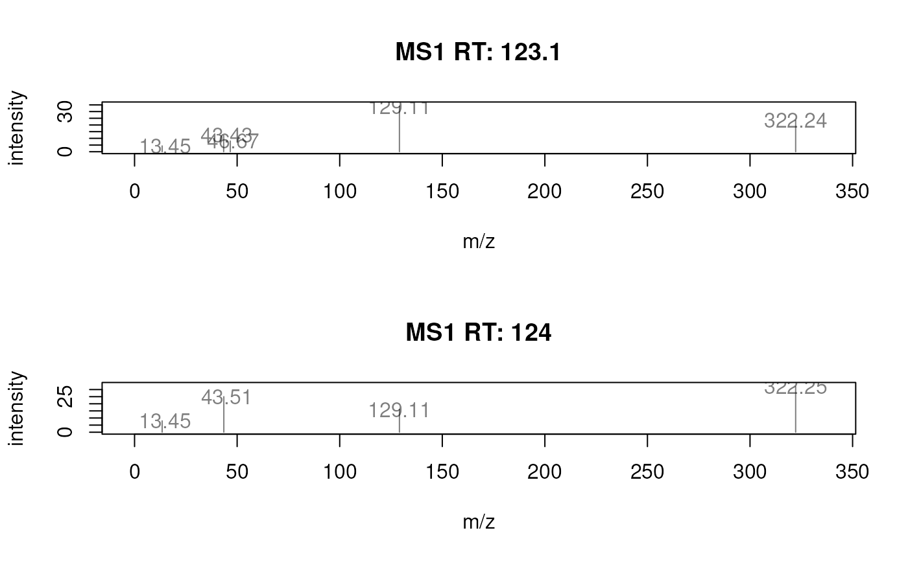
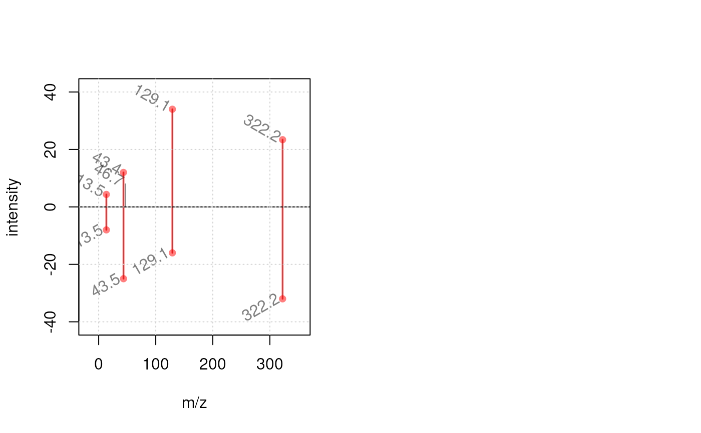

Spectra() can be plotted with one of the following functions
plotSpectra: plots each spectrum in its separate plot by splitting the plot area into as many panels as there are spectra.plotSpectraOverlay: plots all spectra inxinto the same plot (as an overlay).plotSpectraMirror: plots a pair of spectra as a mirror plot. Parametersxandyboth have to be aSpectraof length 1. Matching peaks (consideringppmandtolerance) are highlighted. Seecommon()for details on peak matching. ParametersmatchCol,matchLty,matchLwdandmatchPchallow to customize how matching peaks are indicated.
plotSpectra( x, xlab = "m/z", ylab = "intensity", type = "h", xlim = numeric(), ylim = numeric(), main = paste("RT", rtime(x)), col = "#00000080", labels = character(), labelCex = 1, labelSrt = 0, labelAdj = NULL, labelPos = NULL, labelOffset = 0.5, asp = 1, ... ) plotSpectraOverlay( x, xlab = "m/z", ylab = "intensity", type = "h", xlim = numeric(), ylim = numeric(), main = paste(length(x), "spectra"), col = "#00000080", labels = character(), labelCex = 1, labelSrt = 0, labelAdj = NULL, labelPos = NULL, labelOffset = 0.5, axes = TRUE, frame.plot = axes, ... ) plotSpectraMirror( x, y, xlab = "m/z", ylab = "intensity", type = "h", xlim = numeric(), ylim = numeric(), main = character(), col = "#00000080", labels = character(), labelCex = 1, labelSrt = 0, labelAdj = NULL, labelPos = NULL, labelOffset = 0.5, axes = TRUE, frame.plot = axes, ppm = 20, tolerance = 0, matchCol = "#80B1D3", matchLwd = 1, matchLty = 1, matchPch = 16, ... )
Arguments
| x | a |
|---|---|
| xlab |
|
| ylab |
|
| type |
|
| xlim |
|
| ylim |
|
| main |
|
| col | color to be used to draw the peaks. Should be either of length 1,
or equal to the number of spectra (to plot each spectrum in a different
color) or be a |
| labels | allows to specify a label for each peak. Can be a |
| labelCex |
|
| labelSrt |
|
| labelAdj | see parameter |
| labelPos | see parameter |
| labelOffset | see parameter |
| asp | for |
| ... | additional parameters to be passed to the |
| axes |
|
| frame.plot |
|
| y | for |
| ppm | for |
| tolerance | for |
| matchCol | for |
| matchLwd | for |
| matchLty | for |
| matchPch | for |
Value
These functions create a plot.
Author
Johannes Rainer, Sebastian Gibb, Laurent Gatto
Examples
ints <- list(c(4.3412, 12, 8, 34, 23.4), c(8, 25, 16, 32)) mzs <- list(c(13.453421, 43.433122, 46.6653553, 129.111212, 322.24432), c(13.452, 43.5122, 129.112, 322.245)) df <- DataFrame(msLevel = c(1L, 1L), rtime = c(123.12, 124)) df$mz <- mzs df$intensity <- ints sp <- Spectra(df) #### --------------------------------------------- #### ## plotSpectra ## ## Plot one spectrum. plotSpectra(sp[1])## Plot both spectra. plotSpectra(sp)## Define a color for each peak in each spectrum. plotSpectra(sp, col = list(c(1, 2, 3, 4, 5), 1:4))## Label each peak with its m/z. plotSpectra(sp, labels = function(z) format(unlist(mz(z)), digits = 4))## Rotate the labels. plotSpectra(sp, labels = function(z) format(unlist(mz(z)), digits = 4), labelPos = 2, labelOffset = 0.1, labelSrt = -30)## Add a custom annotation for each peak. sp$label <- list(c("", "A", "B", "C", "D"), c("Frodo", "Bilbo", "Peregrin", "Samwise")) ## Plot each peak in a different color plotSpectra(sp, labels = function(z) unlist(z$label), col = list(1:5, 1:4))#### --------------------------------------------- #### ## plotSpectraOverlay ## ## Plot both spectra overlaying. plotSpectraOverlay(sp)## Use a different color for each spectrum. plotSpectraOverlay(sp, col = c("#ff000080", "#0000ff80"))## Label also the peaks with their m/z if their intensity is above 15. plotSpectraOverlay(sp, col = c("#ff000080", "#0000ff80"), labels = function(z) { lbls <- format(mz(z)[[1L]], digits = 4) lbls[intensity(z)[[1L]] <= 15] <- "" lbls })## Use different asp values plotSpectra(sp, asp = 1/2)plotSpectra(sp, asp = 2/1)#### --------------------------------------------- #### ## plotSpectraMirror ## ## Plot two spectra against each other. plotSpectraMirror(sp[1], sp[2]) ## Label the peaks with their m/z plotSpectraMirror(sp[1], sp[2], labels = function(z) format(mz(z)[[1L]], digits = 3), labelSrt = -30, labelPos = 2, labelOffset = 0.2)grid()## The same plot with a tolerance of 0.1 and using a different color to ## highlight matching peaks plotSpectraMirror(sp[1], sp[2], labels = function(z) format(mz(z)[[1L]], digits = 3), labelSrt = -30, labelPos = 2, labelOffset = 0.2, tolerance = 0.1, matchCol = "#ff000080", matchLwd = 2) grid()